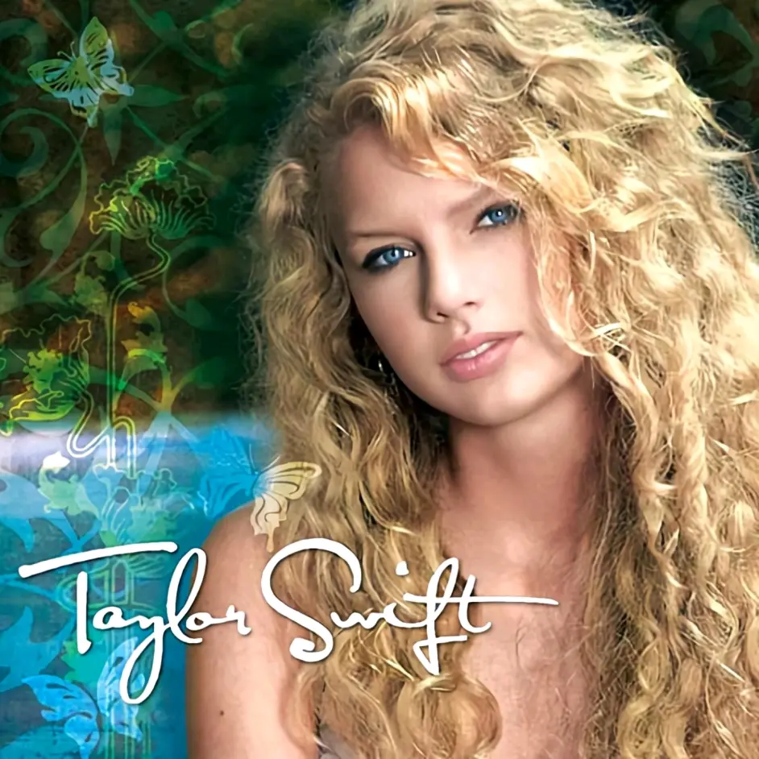

TaylorSwift
- 支持方式
- AppleMusic
- 网易云音乐
- QQ音乐
- 关于网站
- 代码详情
- 联系我们
A GIRL TO THE
World-known Singer

2006年冬天16岁的小小霉正式出道,发行了个人同名专辑《TaylorSwift》(乡村音乐)。当时霉霉的唱片公司大机器也和霉霉一样处于起步阶段，没有什么影响力。于是，霉霉就和她的妈妈一起将专辑发放给各大电台以增加曝光率。功夫不负有心人霉霉首张专辑就十分给力,
专辑发行首周销售了39000张,
之后在公告牌专辑榜中排行第5,公告牌乡村专辑榜冠军后保持连续8周,成绩十分突出,霉霉也因此成功打开了自己的知名度和市场，从这张专辑里你可以看到一个少女的喜怒哀乐从她生活中的点点滴滴看到她对音乐的爱不释手和对创作的热情，霉霉由此“进村”。
2年后霉霉发行第二个专辑《Fearless》
这是霉霉第一次敞开心扉,走向大众向大家分享自己的故事从此刻开始TaylorSwift这个名字为大家熟知霉霉的影响力也不断扩大,在这个时期霉霉也开始收获大批粉丝开启了第一次演唱会:无畏之旅. 而后凭借《Fearless》获得人生第一座年度格莱美奖。
这是霉霉第一次敞开心扉,走向大众向大家分享自己的故事从此刻开始TaylorSwift这个名字为大家熟知霉霉的影响力也不断扩大,在这个时期霉霉也开始收获大批粉丝开启了第一次演唱会:无畏之旅. 而后凭借《Fearless》获得人生第一座年度格莱美奖。
说到《Speak Now》,这张专辑可以说是和无畏专有着千丝万缕的关系，这是霉霉对自己人生故事的续写,《Speak Now》译为《爱的告白》霉粉的爱称：有屁（有屁就放）其实我觉得非常合适，有屁党应该知道这专里写的大部分是霉霉的“吐槽”和对过往经历的感触。
这张专辑极大的体现出霉霉对感情的表达力和对乡村音乐的运用自如。一个公主的形象定格在大众视野和心中。
一个人对生活有多热爱，她的内心世界遍会充满多少种色彩,2012年《RED》火遍全球.霉霉也渐渐褪去公主的形象，逐渐成为全民女神。专辑的名称源于霉霉在构思专辑时经历的“半陶醉的交往关系”，由于这种关系强烈而动荡，因此她感到这是一种“红的情感”。其曲风有流行、乡村和摇滚，较为多样。
《红》是许多人最爱的专辑,不仅因为音乐本身，更因为包含了诸多霉霉细腻入微的真挚情感，这也大概只有资深霉粉才能理解。
《红》是许多人最爱的专辑,不仅因为音乐本身，更因为包含了诸多霉霉细腻入微的真挚情感，这也大概只有资深霉粉才能理解。